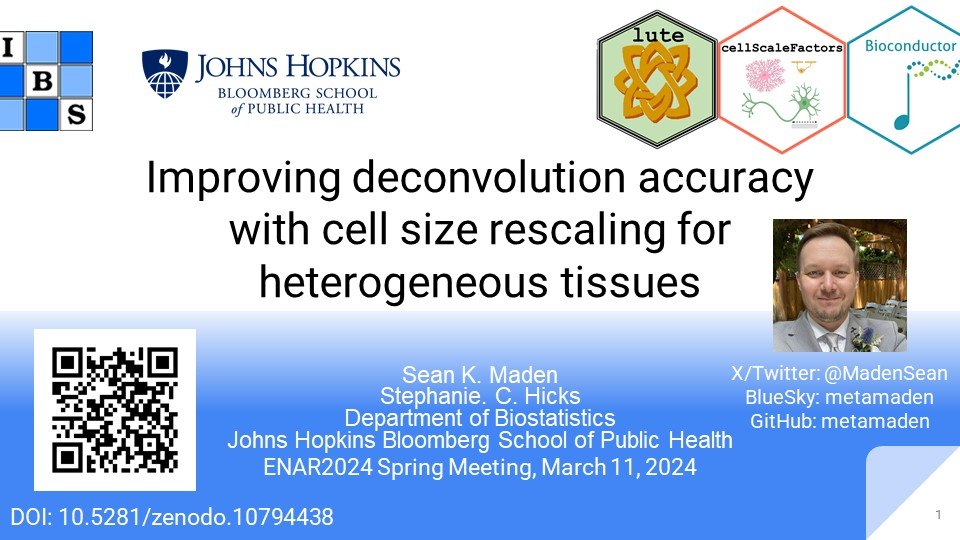
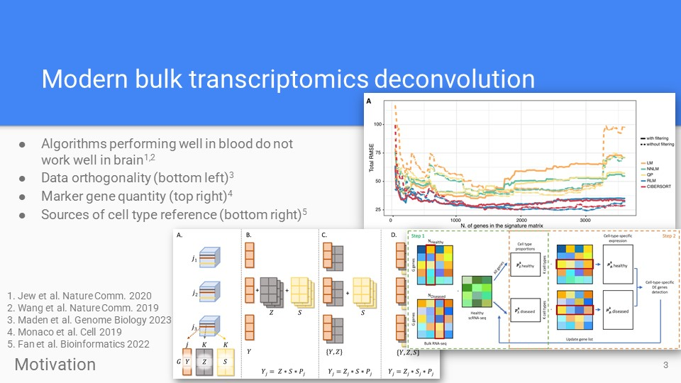
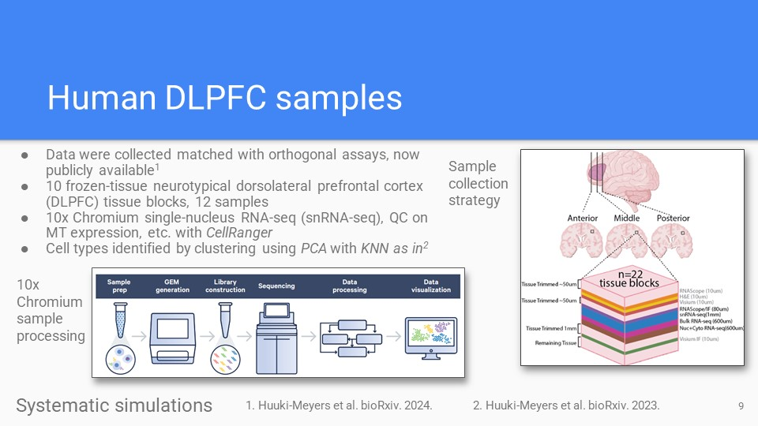
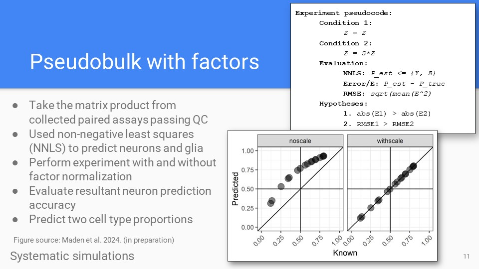
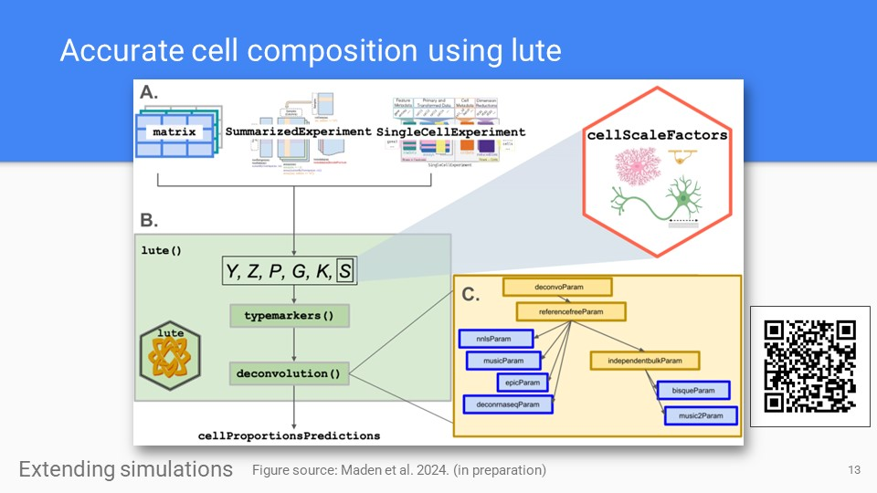
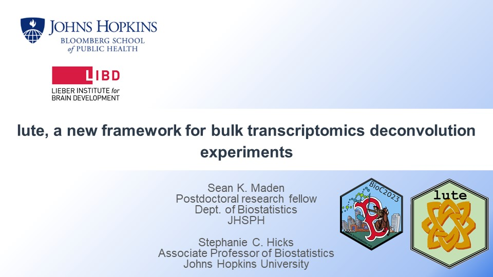
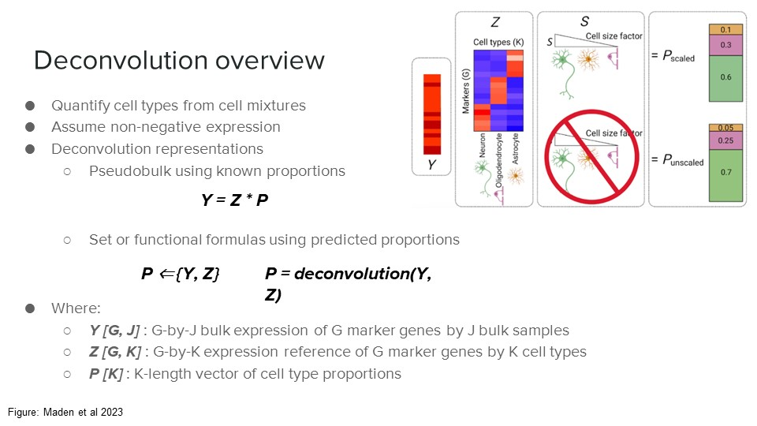
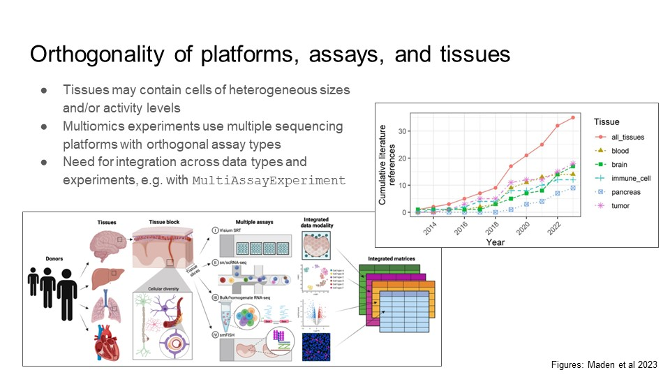
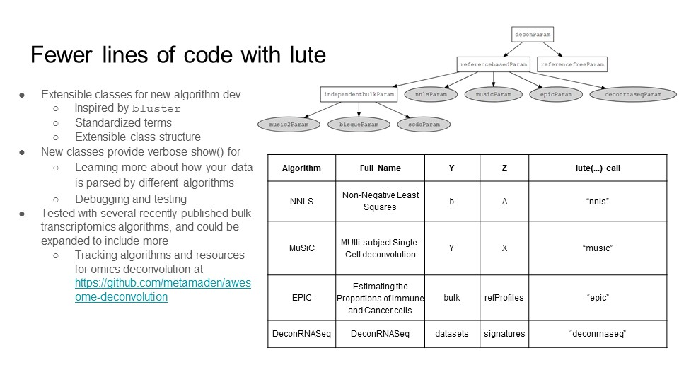

Presentations
ENAR Spring Meeting 2024
-
Title/Intro
Presents results of bulk transcriptomics deconvolution and single-nucleus RNA-seq analysis of human dorsolateral prefrontal cortex, completed during a Postdoctoral Research Fellowship with Johns Hopkins Biostatistics.
Zenodo
-
Deconvolution review
Recent topics in bulk transcriptomics deconvolution, reviewed in out recent Genome Biology article (Maden et al 2023).
Zenodo Maden et al. Genome Biol. 2023
-
Novel cortex data
Novel human cortex orthogonal assay dataset for bulk transcriptomics deconvolution algorithm benchmarks, published in our recent manuscript (Huuki-Meyers et al 2024).
Zenodo Huuki-Meyers et al. BioArxiv 2024.
-
Pseudobulk simulations
Pseudobulk results in novel cortex data. Shows neuron predictions for two-cell type predictions. Also outlined in recent software vignettes, and recent manuscript (Maden et al 2024).
Zenodo Vignette Maden et al. BioArxiv 2024.
-
The lute R package
The lute deconvolution framework and software for deconvolution experiments. Available now on Bioconductor, and described in our recent publication (Maden et al 2024)
Zenodo Bioconductor Maden et al. BioArxiv 2024.
-
Thanks/acknowledgements
This work was made possible by the efforts of Prof. Stephanie Hicks and our "deconvo group" collaborators at the Lieber Institute for Brain Development.
Zenodo
Bioc 2023 Short Talk, RNA-seq
-
Title/Intro
Introduction to lute, deconvolution software developed for Postdoctoral Research Fellowship with Johns Hopkins Biostatistics.
Slides
-
Deconvolution formula
Mathematical representation of reference-based bulk transcriptomics deconvolution as a matrix product problem. Illustrates the product operation to adjust for bias from cell type-specific size divergence.
Slides
-
Multi-subject references
Description of multi-subject references for deconvolution, and increasing availability of algorithm benchmark datasets across tissues and conditions.
Slides
-
Framework software
Describes novel generics, methods, and classes introduced in the lute software framework for deconvolution, and illustrates supported deconvolution algorithm relationships.
Slides